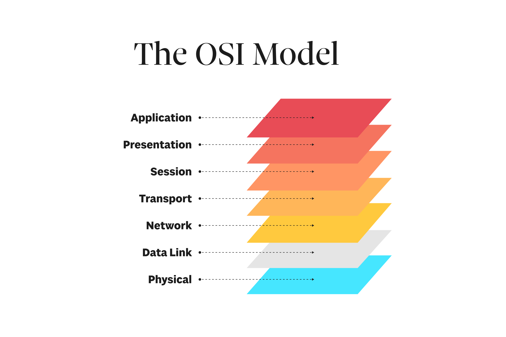

Karthik Bhattaram
Hi! I'm a senior at UC Santa Barbara studying computer science. I'll be starting my master's in March of the coming year.
I have a certificate I received after taking courses covering Linux, network security, and TCP/IP. When I interned at Axiado I developed a Python package that would take packet flow descriptors as input, and output these flows both as raw bytes to be used in simulation, or as packets that could be sent over the wire. The following Summer, I used this tool to test a firewall's packet parser. This testing not only involved creating network traffic the chip would encounter during normal operation, but also packets with exotic headers, and even simulated cyberattacks! At UCSB, I've taken a computer security course, and I'm working on IDS research in our Computer Security Group.

At Cadence Design Systems, I developed an automation tool to create memory wrappers, i.e. combine smaller foundry-provided memories into larger ones. I also have experience with programming in CUDA C++ for the Nvidia A100 from when I worked at OpenEye Scientific. During my internship at Arista Networks, I designed a C++ data structure to decode registers in switching ASICs. I read the chip's technical specifications, and architected a system that could translate the information encoded in these register to a format that could be processed by Linux processes that needed to act on it. At UCSB, I took a computer architecture class that covered cache designs, paging, and branch prediction.
Last year, I worked under Professor Arpit Gupta on applying machine learning to computer networks. We developed an LLM agent to diagnose network issues (e.g. low signal strength) and suggest a solution (e.g. moving closer to the wireless access point). My contributions were building the infrastructure for this tool to make it RAG-capable and developing network measurement pipelines. We published our results on arXiv here. I'm currently taking a graduate course covering graph neural networks, and I've previously taken courses in machine learning, machine learning for networking, artificial intelligence, and convex optimization.

You can find my resume here.